Az informatika fejlődéstörténete
Kezdet:
A számolást az emberiség történetében mindig alkalmazták, az első gép, amit létrehoztak, az abakusz volt. Az abakusz némi módosítással a XVI. század legfontosabb számoló eszköze volt. Nagy áttörést jelentett a logaritmus megjelenése, amit John Napier 1-1 pálca segítségével valósított meg.
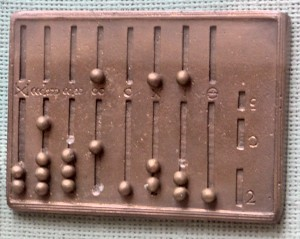Mechanikus gépek:
Az első mechanikus számológépet Blaise Pascal 1642-44 között készítette el. A számológéppel csak az összeadást és kivonást lehetett végezni, a szorzást és az osztást nem. Pascal számológépét Gottfried Wilhelm von Leibniz fejlesztette tovább. Ez a gép volt az első, amely közvetlenül végezte el az osztást és a szorzást, valamint kiegészítő művelet nélkül a kivonást. 1833-ban Charles Babbage elkezdte az analitikus gép elkészítését. Herman Hollerith a lyukkártya alkalmazásához egy adatrendező gépet dolgozott ki, melyet népszámláláshoz használt Amerikában.
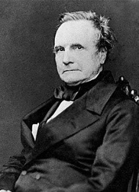 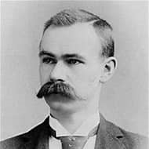Elektromechanikus gépek:
A németországi számítógépgyártás meghatározó egyénisége Konrad Zuse mérnök volt. 1939-ben készült el az első mechanikus rendszerű számítógépe, a Z1. Ez az első gép, mely már a bináris számrendszerre épült. Külön volt a tár és az aritmetikai egység, az utasítások beviteléhez mikronyelvet alkalmazott. Ezt követte a Z2, mely igazolta Zuse programvezérlési elgondolásainak helyességét. A Z2 továbbfejlesztésének eredményeképpen megszületett a Z3.
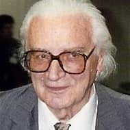 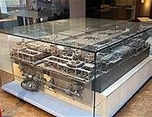 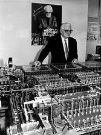 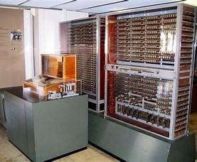Az 1900-as években a számítógépek fejlődésének meghatározó személyei közé soroljuk Wallace J. Eckert, valamint Howard Hathaway Aikent. Aiken kutatása a számítógépekben alkalmazott aritmetikai elemek számának jelentős növelésén keresztül a lyukkártyás gépek hatékonyságának növelésére irányult. Aiken és az IBM 1939-ben megállapodást kötött a közös fejlesztő munkára, amelynek eredményeképpen 1944-ben elkészült az elektromechanikus elven működő Mark-I. A gépet egy papírszalagra sorosan felvitt utasítássorral lehetett vezérelni. A készülék kb. százszor volt gyorsabb, mint egy jó kézi számolókészülék, megállás nélkül dolgozott, egy nap alatt hat hónapi munkát végzett el. A Bessel-függvények értékeit számították ki vele táblázatos formában, de más területen - mint például közönséges és parciális differenciál-egyenletek megoldására - nem alkalmazták.
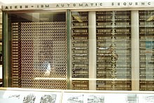
Elektronikus gépek:
A háború alatt a haditechnika fejlődésével felmerült az igény a számítások precizitásának növelésére. Több gépet is kifejlesztettek, de ezek egyike sem bírta felvenni a versenyt a náluk kb. 500-szor gyorsabb ENIAC-kel. A gép 30 egységből állt, minden egység egy meghatározott funkciót végzett el. A főleg aritmetikai műveletek végrehajtására tervezett egységek között 20 ún. akkumulátor volt az összeadáshoz és kivonáshoz, továbbá egy szorzó, egy osztó és egy négyzetgyökvonó egység is. A számokat egy IBM kártyaolvasóval összekapcsolt ún. konstans átviteli egységgel lehetett bevinni. Az eredményeket egy IBM kártyalyukasztóval kártyára lyukasztva adta ki.
Számítógépes generációk:
Első generáció:
AZ ÖTVENES ÉVEKBEN A NEUMANN-ELVEKET FELHASZNÁLVA KEZDTÉK ÉPÍTENI AZ ELSŐ GENERÁCIÓS SZÁMÍTÓGÉPEKET. Az első elektronikus digitális számítógép az ENIAC. Meg kell említenünk az EDVAC és az UNIVAC gépeket is.
Tulajdonságaik:
- működésük nagy energiafelvételű elektroncsöveken alapult
- terem méretűek voltak
- gyakori volt a meghibásodásuk
- műveleti sebességük alacsony, néhány ezer elemi művelet volt másodpercenként
- üzemeltetésük, programozásuk mérnöki ismereteket igényelt
Második generáció:
A tranzisztor feltalálása az ötvenes évek elején lehetővé tette a második generációs számítógépek kifejlesztését.
Tulajdonságaik:
- az elektroncsöveket jóval kisebb méretű és energiaigényű tranzisztorokkal helyettesítették
- helyigényük szekrény méretűre zsugorodott
- kialakultak a programozási nyelvek, melyek segítségével a számítógép felépítésének részletes ismerete nélkül is lehetőség nyílt programok készítésére
- tárolókapacitásuk és műveleti sebességük jelentősen megnőtt
Harmadik generáció:
Az ötvenes évek végén a technika fejlődésével lehetővé vált a tranzisztorok sokaságát egy lapon tömöríteni, így megszületett az integrált áramkör, más néven IC (Integrated Circuit). A hetvenes évek számítógépei már IC-k felhasználásával készültek.
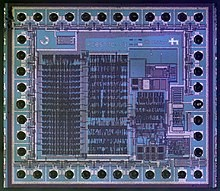Tulajdonságaik:
- jelentősen csökkent az alkatrészek mérete és száma, így a gépek nagysága már csak asztal méretű volt
- megjelentek az operációs rendszerek
- a programnyelvek használata általánossá vált
- megjelentek a magas szintű programnyelvek (FORTRAN, COBOL)
- műveleti sebességük megközelítette az egymillió elemi műveletet másodpercenként
- csökkenő áruk miatt egyre elterjedtebbé váltak, megindult a sorozatgyártás
Negyedik generáció:
A hetvenes évek elején az integrált áramkörök továbbfejlesztésével megszületett a mikrochip és a mikroprocesszor, melyet elsőként az Intel cég mutatott be 1971-ben. Ez tette lehetővé a negyedik generációs személyi számítógépek létrehozását. Ebbe a csoportba tartoznak a ma használatos számítógépek is.
Tulajdonságaik:
- asztali és hordozható változatban is léteznek
- hatalmas mennyiségű adat tárolására képesek
- műveleti sebességük másodpercenként több milliárd is lehet
- alacsony áruk miatt szinte bárki számára elérhetőek
- megjelentek a negyedik generációs programnyelvek (ADA, PASCAL)
Ötödik generáció:
Az ötödik generációs számítógépek létrehozására irányuló fejlesztési kísérletek a nyolcvanas évek elején Japánban kezdődtek meg.
Tulajdonságaik:
- a mesterséges intelligencia megjelenése
- felhasználó-orientált kommunikáció
Az ötödik generációs számítógépek fejlesztése még kezdeti stádiumban van, ezért piacon való megjelenésükre a közeljövőben nem számíthatunk.
Forrás:erettsegi.com
A számítógép fejlődése
Az informatika születése
Az informatika tudománya a második világháborúban született. Hitler csapatai 1940-ben Anglia meghódítására készültek. Norbert Wiener német származású, amerikai matematikuskapott felkérést arra, hogy oldja meg a légelhárító ágyúk radarral történő vezérlésének problémáit. A feladatot sikerrel megoldották, a német légierő érzékeny veszteségeket szenvedett és meghiúsult az angliai partraszállás. Weiner a munka során rájött arra, hogy eza feladat nem egyszerűen matematikai és technikai probléma. Egy szervezet hatékony működése érdekében meg kellett oldani az egyes részek közötti gyors és pontos információáramlást. Az infomatika alapfogalmainak első részletes összefoglalására 1948-bankerült sor Weiner egyik könyvében.
Az informatika tárgya az a folyamat, amelynek során az információ az adótól a vevőig eljut, az a rendszer, amelynek keretében ez a folyamat lezajlik és azok az eszközök, módszerek, eljárások, amelyek a két végpont között a rendszer alkotóelemeit képezik. Az informatika tanok közötti (interdiszciplináris) tudomány, amely olyan jelenségeket vizsgál, amelyek más tudományoknak a tárgyát képezik, és olyan módszerekkel, amelyeket más tudományoknál is alkalmaznak. Az informatika olyan tudomány, amely az információ tudatos szerzésével, átalakításával, tárolásával, feldolgozásával, továbbításával, felhasználásával, valamint az ezekhez szükséges eszközökkel és módszerekkel foglalkozik.
Az informatika tárgya
Az informatika tárgya az a folyamat, amelynek során az információ az adótól a vevőig eljut, az a rendszer, amelynek keretében ez a folyamat lezajlik és azok az eszközök, módszerek, eljárások, amelyek a két végpont között a rendszer alkotóelemeit képezik. Az informatika tanok közötti (interdiszciplináris) tudomány, amely olyan jelenségeket vizsgál, amelyek más tudományoknak a tárgyát képezik, és olyan módszerekkel, amelyeket más tudományoknál is alkalmaznak. Az informatika olyan tudomány, amely az információ tudatos szerzésével, átalakításával, tárolásával, feldolgozásával, továbbításával, felhasználásával, valamint az ezekhez szükséges eszközökkel és módszerekkel foglalkozik.
Az első elektroncsövekkel működő elektronikus számítógépet 1945-ben helyezték üzembe. Az 50-es évek végén megszületett az első tranzisztoros számítógép, amelyet a 60-as években az integrált áramkörökből felépített számítógép követett. 1971-ben az Intel cégnek sikerült először létrehoznia a processzort: egyetlen tokba integrálták a számítógép központi egységét. A számítógép már a leguniverzálisabb eszköz, amely a képek és hangok feldolgozására (multimédia), valamit hírközlésre is alkalmas.
Napjainkban
A számítógépek segítenek az információk rögzítésében, feldolgozásában, rendszerezésében, kiválasztásában és továbbításában. Az internet megjelenésével elképzelhető, hogy nemsokára minden információ, amelyek jelenleg könyvekben, vagy más hagyományos információhordozókon találhatók, elérhetők lesznek a számítógépes világhálón és megfelelő sebességgel lehívhatók lesznek.
Napjainkban fontos feladat az oktatás és a távoktatási rendszerek létrehozása és multimédiás tananyagok kidolgozása. Alapvető feladat, hogy minden iskolát rákapcsoljanak a világhálóra, ehhez a törekvéshez igazodott a Sulinet program, amelynek keretében a középiskoláknak biztosították az internet-elérést. Fejlesztendő terület a távoktatási program, a digitális tankönyvek, a multimédiás anyagok készítése, a digitális tankönyvtár létrehozása.
Manapság a cégeknél az IT-részlegek a vállalati stratégia végrehajtásának élharcosai, amelyek vezető szerepet játszanak az innovációban, a versenyelőny megszerzésében és fenntartásában, valamint az egyre fokozódó vásárlói igények kielégítésében.
Források:AZ INFORMATIKA FEJLŐDÉSTÖRTÉNETE
Elavult technológiák
Lyukkártya
A lyukkártya vagy Hollerith-kártya olyan adathordozó, elsődlegesen adatbeviteli eszköz, ahol a digitális információt a keménypapírból készült kártyán adott pozícióban meglevő lyukakkal ábrázolják.
Története
Lyukkártyákat és ehhez hasonló rendszereket már a 18. század közepén használtak az automatizálás és az adatfeldolgozás területén. Többnyire az ismétlődő folyamatok vezérlése volt a céljuk. Léteztek többek között lyukkártya-vezérlésű szövőszékek, ahol a lyukkártyát falapocskák jelentették. A verkliket gyakran lyukkártyához hasonló adattárolók vezérelték, de más automatikus vagy félig automatikus zeneszerszámoknál is megjelent ez a megoldás. Charles Babbage lyukkártya-vezérlést tervezett az analitikai géphez.
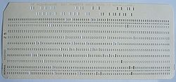A lyukkártyák eredete a zenélő dobozok működési módjáig vezethető vissza. Ezeknél és hasonló automatáknál egy forgó henger a rajta levő lyukakkal vezérelte a zeneszámok lejátszását vagy mechanikai folyamatok vezérlését.
A lyukkártyán való adattárolás alapja az, hogy az adott automata működéséhez szükséges adatokat megfelelő formában kódolják. Egy vékony kartonra lyukakat készítenek, amelyeknek a helyét a mindenkori kódtáblázat határozza meg. A funkció végrehajtásához az adathordozón levő lyukakat egy olvasóegység beolvassa és egy megfelelő berendezéssel dekódolja. A parancsok bevitele történhet mechanikus, pneumatikus, optikai vagy elektromechanikai úton.
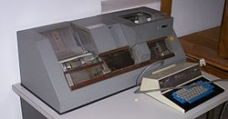Működése
A lyukkártyák írására vagyis lyukasztására külön gép, a kártyalyukasztó szolgált, de készítettek kézi lyukasztásra szolgáló egyszerű kártyalyukasztókat is. A kártyalyukasztó írógép-billentyűzetből, lyukasztórészből és egy programkártyából állt. Miután a kártyalyukasztóval rávitték a kódot a kártyákra, a kártyákat egy második gépen ellenőrizték, amelyen újra bepötyögték az adatokat, és ha a második bevitel egyezett a kártyán már meglevő lyukasztásokkal, akkor a gép ellenőrzöttként jelölte meg a kártyát. A programkártya a munka megkönnyítésére szolgált. Ennek segítségével például numerikus vagy alfanumerikus mezőket lehetett definiálni a kártyán és ezekhez a mezőkhöz közvetlenül lehetett ugrani. Volt egy másolóbillentyű is, amelynek segítségével egy kártyát a megadott oszlopig lehetett másolni. A programkártya megkönnyítette a tömeges adatbevitelt azzal, hogy bizonyos oszlopokat automatikusan átugrott, vagyis elég volt csak a tiszta adatokat begépelni, nem volt szükség vezérlőbillentyűk használatára. Az újabb készülékek arra is alkalmasak voltak, hogy a lyukkártya adattartalmát szövegesen is megjelenítsék a kártyán.
A kártyák beolvasása optikai vagy mechanikus olvasóberendezésekkel történt. A lyukkártyaköteget behelyezték az olvasórekeszbe és egy súllyal lenyomatták. Egy gombbal bekapcsolták az olvasóberendezést, ezután a gép levegő befújásával fellazította a köteget és egyesével beolvasta a kártyákat. Maga a beolvasás vagy mechanikus letapogatással vagy fotocellákkal történt.
Ebben az időben a programok nem interaktív módon működtek; a programot elindították, beolvasta az adatokat, feldolgozta őket és kiadta az eredményeket. Ehhez a működési módhoz három kártyakötegre volt szükség: az egyik a programot, a másik a bemenő adatokat tartalmazta, és a harmadikra kerültek a kimenő adatok. Nagytömegű bemenő adat feldolgozásakor a kártyarögzítés után néha hatalmas mennyiségű lyukkártyát kellett megfelelő sorrendbe rendezni. Erre használták a szorter-, magyar elnevezéssel a lyukkártyarendező gépeket. A harmadik köteg használata elég kivételes volt, mivel az eredményeket legtöbbször elegendő volt papírra nyomtatni.
Forrás: wikipédia
CD

A CD (a Compact Disc rövidítése, vagy magyarul kompaktlemez) általában mintegy 650-700 MB (Megabyte) kapacitású optikai tároló, amely hang, kép, valamint adat digitális formátumú tárolására használatos. Az első kereskedelmi forgalomba került CD 1982. augusztus 17-én készült el.
Műszaki specifikációk, a CD-k fajtái
Méreteit tekintve a CD általában 120 mm átmérőjű, és 1,2 mm vastag. Ritka ugyan, de léteznek a Mini-CD lemezek, 80 mm-es átmérővel. Legelőször 115 mm volt a szabvány, azonban 1982 után a 120 mm-es lemezek jöttek forgalomba.
Az írható CD-ken az információt a polikarbonát hordozó alatt elhelyezkedő nagyon vékony, filmszerű szerves festékrétegbe égetik be. Erre a célra infravörös (780 nm-es) lézerdiódákat alkalmaznak. Ezek fényét fókuszálva a festékrétegben maradandó, kis tűszerű kráterek (pitek), elváltozások keletkeznek. Az információ kiolvasása szintén lézerfény segítségével történik, csak csökkentett energiaszinttel. A lemez információhordozó-rétegéről visszaverődő fényt az optoelektronikai fejegység érzékeli és dolgozza fel. Amikor az olvasófej egy pit felett van, akkor csökkent fényintenzitást érzékel, mivel a fókuszált lézerfény pitről visszaverődő része gyengítő interferenciába lép a környező landról visszaverődő fénnyel. Land fölött a fény nagymértékben visszaverődik. A CD kódrendszerében a pit-land vagy land-pit átmenet (azaz a fényerősség hirtelen változása) jelenti az 1-et, az átmenet hiánya (amikor nem változik a visszavert fény mennyisége) pedig a 0-t.
A CD-k - fizikai felépítésük szerint - a következők szerint csoportosíthatók:
- préseléssel készült (csak olvasható)
- CD-R (írható)
- CD-RW (újraírható, azaz letörölhető és rá új adatok írhatók)
A tartalom alapján a következő fajták léteznek:
- CD-DA (CD-Digital Audio, hanganyag tárolására, általában zenei albumokat tartalmaz)
- CD+G (CD+Graphics)
- CD+MIDI
- CD Text (a hanganyag mellett szöveges album és száminformációkat is tartalmaz(hat))
- CD-Extra (más néven Cd Plus, hanganyagot és - általában ehhez kapcsolódó - számítógépes adatokat is tartalmaz)
- HDCD (High Definition CD)
- CD-ROM (adatok tárolására)
- CD-i (interaktív CD)
- PhotoCD
- VideoCD (film tárolására alkalmaz, nem azonos a DVD-vel!)
- SVCD (Super VideoCD)
A CD-n az adatokat a hanganyagtól némileg eltérő módon tárolják.
A CD megalkotásakor az egyik legnagyobb probléma a hibás bájtok kiszűrése volt. Ennek érdekében minden bájtot egy táblázat szerint egy 14 bites sorozatra cserélnek (EFM). Ezzel nem csupán ellenőrizni lehet az adat sértetlenségét, de a módszer garantálja, hogy ne követhesse egymást túl sok (10-nél több) nulla bit (mivel akkor az olvasófej „elszámolhatná” magát). Mivel a lemez 8 bit hasznos adatot 14 bit alakjában tárol, a tárolás redundanciája magas, 43%-os.
Története
Kétségtelen, hogy az 1979-es év hangtechnikai szenzációja a Philips cég bejelentése volt, miszerint az év második felétől sorozatban gyártja új hanglemezét és lemezjátszóját, a lézeres letapogatású „Compact Disc”-et. A technológiai eljárást már az 1970-es évek elején kidolgozták és még 1976-ban bejelentették. Azonban a teljes CD-gyártó apparátust és a lejátszókészülék-gyártó üzemet csak 1979-re tudták olyan helyzetbe hozni, hogy kisebb széria előállítására is alkalmas legyen.
1979-ben a Philips és a Sony egy rendkívüli képességekkel rendelkező kutatócsoportot hozott létre, az új digitális audiolemez megalkotására. A mérnökcsoport vezetői Kees Immink és Toshitada Doi voltak. Több mint egyéves kutatás után a mérnökcsoport nyilvánosságra hozta az ún. „Vörös „Könyv”-et, mely a Compact Disc alapjait és struktúráját tartalmazta. A Philips szabadalmaztatta az általános gyártási eljárást, mely a videó LaserDisc technológiáján alapul valamint az Eight-to-Fourteen Modulation (EFM) technológiát, mely egyszerre nyújt hosszú lejátszási időt és magas ellenálló képességet az ujjlenyomatokkal és karcolásokkal szemben. A Sony védjegye a hibakorrekciós eljárás, a CIRC (Cross Interleaved Reed-Solomon Code).
Egy korábbi kutatócsoportban dolgozó mérnök a Compact Disc kifejlesztését „egy közösen, sok ember által létrehozott szellemi termék létrejötteként” jellemezte.
A Compact Disc 1982 végén lépett be az ázsiai piacra. A következő év elején megjelent az amerikai és más piacokon is. Az első kereskedelmi forgalomba került CD 1982. augusztus 17-én készült el. A Philips hivatalos adatai szerint a németországi Hannoverben található első gyártósorról az ABBA The Visitors című albumának példányai gördültek le elsőként, jóllehet a formátum kereskedelmi bevezetésére Európában március folyamán került sor (Japánban már novemberben). Ezt az eseményt a digitális audioforradalom „Big Bang”-jeként emlegetik. Az új audiolemezt hatalmas érdeklődéssel és csodálattal fogadták, különösen a komolyzene rajongói, kiváló minősége miatt. Ahogy a CD-lejátszók ára rohamosan csökkenni kezdett, úgy értek el egyre nagyobb közkedveltséget a pop- és rockzenei piacon is.
A CD-t eredetileg a hanglemezek utódaként emlegették, de inkább mint adathordozó érte el sikereit, bár karrierje elején valóban csak és kizárólag zeneszámok tárolására alkalmazták. 1985 júniusában a CD-ROM-ot (csak olvasható memória) és 1990-ben az újraírható CD-t (CD-RW) mutatta be a Sony és a Philips.
Magyarországon az első CD-kiadvány volt az Omega Platina című válogatásalbuma 1988-ban.
Forrás: wikipédia
DVD
A DVD (Digital Versatile Disc - digitális sokoldalú lemez, vagy még korábban a Digital Video Disc rövidítése) nagy kapacitású optikai tároló, amely főként mozgókép és jó minőségű hang, valamint adat tárolására használatos. 1995-ben alkotott konzorciumot a Matsushita, a Toshiba, a Philips, a Sony, a Time Warner, a Mitsubishi, a Pioneer, a Hitachi, a Thomson és a JVC, hogy létrehozzanak egy az eddigieknél nagyobb kapacitású adathordozót, melynek paramétereiben megegyeztek.

Méreteit tekintve általában akkora, mint a CD, vagyis 120 mm átmérőjű. Ritka ugyan, de létezik a Mini-CD-hez hasonlóan Mini-DVD, 80 mm-es átmérővel. A CD-vel felülről kompatibilis.
Fajtái
- DVD-videó (mozgóképek tárolására)
- DVD-Audio (hang tárolására)
- DVD-ROM (adat, préselt)
- DVD-RAM (adat, közvetlen (direkt) elérésű)
- DVD-R és DVD-RW (adat; az R egyszer írható [recordable], az RW újraírható [rewritable])
- DVD+R és DVD+RW (fenti kettőhöz hasonló, azokkal rivalizáló formátum)
A +R/+RW, illetve -R/-RW formátumok egymással nem teljesen kompatibilisek, támogatottságuk kb. fele-fele arányban oszlott meg megjelenésük táján a piacon, majd 2006 végére szinte az összes otthonokba kerülő lejátszó támogatta mindkét típust.
A CD-vel ellentétben, amin a hangot az adathoz képest teljesen eltérő módon tárolják, a DVD-k különböző fajtái egységes, közös állományrendszert, az úgynevezett UDF-et használják.
DVD adatlemezek
- A DVD-ROM-lemezek előre írtak, „házi” írásuk nem lehetséges, olvasásukhoz szükség van egy DVD–ROM-olvasóra. A lemezek körülbelül 4,7 GB adatot képesek tárolni egy rétegen; vannak kétrétegű lemezek, ezek összesen körülbelül 8,5 GB adatot tartalmaznak.
- A DVD-RAM egy kicsit kilóg a sorból, külön tárolója van, mely miatt természetesen már az olvasásához is másfajta eszköz kell, mint a többihez. Befogadóképessége 4,7 GB oldalanként, nevéből eredően tetszőleges elérésű, többször írható.
- A DVD-rögzítők 2000-ben kezdtek megjelenni Japánban, azóta közel az egész világon elérhetővé váltak. Az írható lemezeknek több formátumuk létezik, ezek - mint a történelemben oly sokszor már - természetesen versengenek egymással. Lehetnek egy- vagy kétoldalasak.
Típusai szerint:
- DVD-5 egyrétegű egyoldalas lemez, 4,7 GB kapacitással
- DVD-10 egyrétegű kétoldalas lemez 4,7 × 2, azaz 9,4 GB kapacitással.
- DVD-9 kétrétegű egyoldalas lemez 8,5 GB kapacitással
- DVD-18 kétrétegű kétoldalas lemez, 8,5 × 2, azaz 17 GB kapacitással.
DVD-meghajtók
A DVD-meghajtók DVD-lemezek lejátszására alkalmas olvasóegységek, melyek visszafelé kompatibilisek az előző lemezformátumokkal (CD-Audio, CD-ROM, VCD, SVCD stb.)
Élettartam
Egy közönséges DVD élettartama, jó tartási körülmények közt 10-15 év. Érdemes fénytől védett, hűvös, páramentes helyen tartani őket. Léteznek archiválási minőségű DVD-k, ezek élettartama hosszabb (100 év). Áruk a normál DVD 5-6-szorosa.
A DVD lemezek élettartama igencsak szóródik. Az ismert NIST-tesztek szerint csupán a vizsgált termékek 47%-ának becsült élettartama van túl a 15 éven. A legrosszabb eredmény 1,9 év a becsült élettartamra. A lemez állapotromlása többféle módon történik: finoman felkarcosodik a lemez adatoldalának felszíne, például a sokat használt, tok nélkül vagy papírtokban tárolt, vagy helytelenül tisztított lemezeknél, szórva a lézernyalábot; homályossá válik vagy elszíneződik a műanyag, esetleg az adatréteg felszíne, azt károsító tisztítóanyag hatására; vetemedik, görbül a korong, ami a lejátszót is károsíthatja; az írható DVD felső fedőrétegében hajszálrepedések, esetleg karcolások alakulnak ki, ami rontja a lézerfény visszaverődését a tárolt jelekről; szintén az írható lemezek tárolóanyagában, amely egy viszkózus, igen vékony folyadékréteg, a gyakran használt lemez meghajlásai miatt néhány helyen romlik a jelek karakteressége, egyértelműsége, bizonyos mérték felett már adatvesztést is okozva.
Forrás:wikipédia
Írógép
Az írógép olyan mechanikus, elektromechanikus vagy elektronikus szerkezet, amely billentyűinek megnyomására betűket nyomtat közvetlenül egy papírlapra.
A szerkezettel dolgozó személyt gépíró(nő)nek vagy gépelőnek nevezték.
Története
Az első írógépek olyképpen voltak szerkesztve, hogy egy emeltyűrúdon voltak az egyes betűk és jelek a nyomdai betűk módjára kivésve és a rudat kellett egy nyíláshoz előre-hátra mozgatni aszerint, amilyen betűt akartak lenyomtatni. Később kör alakú lemezt használtak, melyen épp úgy voltak a betűk alkalmazva, mint az előbbin és egy fogantyúval kellett a lemezt az írónyíláshoz forgatni. A betűváltó (Shift billentyű) először egy 1878-as Remington modellen jelent meg, azt megelőzően csupa nagybetűs írásmódot használtak.
A 20. század nagy részében az írógépek elengedhetetlen eszközei voltak az irodáknak, hivataloknak és sok - ha nem a legtöbb - hivatásos írónak, egészen addig, amíg az 1980-as években előbb a szövegszerkesztő gépek, majd a számítógépek és a dokumentumszerkesztő programok át nem kezdték venni az írógépek feladatait. A fejlődő országokban azonban az írógépek ma is nagy népszerűségnek örvendenek.
Az írógépekre alakították ki a ma is leggyakrabban használatos QWERTY-típusú billentyűzetkiosztást. Ezt az írógépek mechanikájához szabták, amelyben az egymás mellett lévő billentyűk egymás után lenyomva összeakadhattak. A billentyűk elhelyezésekor tehát olyan elrendezést igyekeztek kialakítani, amelyben a gyakran egymás után következő betűk egymástól nagyobb távolságra vannak a billentyűzeten. A számítógépes billentyűzetek eltérő működése miatt ma már erre nem lenne szükség, eddig azonban egyik reformkísérlet eredménye sem vált olyan elterjedtté, mint az eredeti billentyűzetkiosztás.
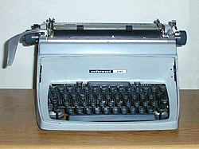 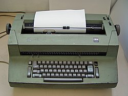 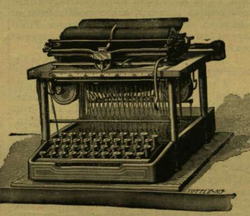2006-ban a következő cégek gyártottak írógépeket és kiegészítőket: Smith Corona, Olivetti, Adler-Royal, Olympia Business Systems, Brother Industries és Nakajima. Ezek közül mechanikus írógépet már csak az Olivetti gyárt, az összes többi cég már csak elektromos vagy elektromechanikus kivitelűt.
A régebbi típusú írógépek könyökkaros betűkar-szerkezetűek (Wagner rendszerűek) voltak, melyeknél nagybetűk írásakor az írógépkocsi hengere felemelkedett. A korszerű írógépek esetében a betűkarszerkezet csuklós, vagyis nagybetűk írásakor a betűkosár lesüllyed: ma már az írógépet gyártó országokban kizárólag ilyen felépítésű típusokat állítanak elő.
Forrás:wikipédia
Magnókazetta
A magnókazetta egy mágnesszalag alapú adathordozó, mely a hagyományos orsós magnetofonszalaggal szemben speciálisan kialakított zárt házban fut. Különféle változatait hang-, kép- és adatrögzítésre használják, analóg vagy digitális módon.
Története
Hangrögzítés
Hangrögzítés céljára az 1960-as évek elejétől kezdődően többféle rendszert bevezettek, ilyen volt a Grundig-féle DC International, vagy az Amerikában igen népszerű Stereo 8. Végül univerzális hangtechnikai célokra a Philips által kifejlesztett Compact Cassette rendszer terjedt el világszerte, melyet a holland Lou Ottens talált fel 1963-ban.
A kazettás magnetofonok az orsós magnókkal szemben nagy fokú mobilitást és kényelmes kezelhetőséget biztosítottak. Egyszerű módot kínált saját hangtár létrehozására rádióból vagy hanglemezről felvett műsoranyagok révén, emellett nagy tömegben jelentek meg kazettán kiadott zenei albumok. A kazetta ennek köszönhetően a digitális hangrögzítés megjelenése előtt uralkodó szerepet töltött be mint hanghordozó médium.
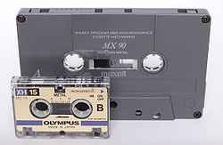Fénykora az 1970-es, 1980-as évekre tehető, ekkor a mikrobarázdás hanglemez mellett ez volt a legelterjedtebb hanghordozó. Különös népszerűségnek örvendett a zeneélvező ifjúság körében, de az élet valamennyi területén használták a hangtechnikában (pl. nyelvoktatás, riportkészítés stb.) Bár kommersz célokra használták leginkább, az 1980-as évekre több cég is kifejlesztett professzionális, stúdió célú kazettás magnetofont is, ilyen volt a legendás svájci Revox cég B 710 típusú készüléke. A magnókazettával megvalósítható hanghűség tehát alapvetően két tényező függvénye: a jelhordozó anyag és a rögzítésnél alkalmazott készülék minősége.
Noha megpróbálkoztak a minőség javításával (pl. Elcaset), a magnókazetta karrierjének végét a CD megjelenése okozta. Bár igen szűk kínálatban, de napjainkban is forgalmazzák, tekintettel a még jelentős számú hozzá való üzemképes eszközre. Digitális rögzítési módot használó kazettákkal is próbálkoztak, ilyen a DAT és DCC, de lemezalapú írható formátumok (pl. MiniDisc) kényelmével, majd a CD-R lemezek alacsony árával nem versenyezhettek.
A legismertebb márkák a teljesség igénye nélkül: Agfa, BASF, Fuji, Maxell, Memorex, Philips, Scotch, Sony, TDK. Megemlítendő a volt szocialista tábor keletnémet terméke, az ORWO, valamint hazánkban huzamos ideig gyártott Polimer márka, amely valójában Magna, illetve BASF-szalagokat használt.
Képrögzítés
Az első mágnesszalagos képrögzítő rendszerek orsós szalaggal dolgoztak. A kényelmesebb kezelés okán fejlesztették ki professzionális célra az U-matic rendszert. az 1970-es évek végén a JVC fejlesztette ki a VHS videórendszert, mely a nyolcvanas évek során népszerűvé válva lehetővé tette az otthoni filmgyűjtemények létrehozását, tévéműsorok felvételét, majd a házi kamerák elterjedésével először vált lehetővé az egyszerű és gyors házi videókészítés. A Sony által kifejlesztett Betamax rendszer műszaki adatait tekintve ugyanolyan jó volt mint a VHS, ennek ellenére széles körben nem tudott elterjedni, akárcsak a Video 2000 rendszer. Az analóg képrögzítés minőségének feljavítására több kísérlet is született, pl. S-VHS és SuperBeta rendszer, majd házi kamerák számára a DV (Digital Video) rendszer.
Adatrögzítés
A korai otthoni számítógépek egy része a számítógéphez analóg kábellel kapcsolt kazettás magnóról töltötte be a programokat, valamint arra rögzítette az adatokat, ez volt a szalagos meghajtó, vagy angolul streamer. A kényelmesebb floppy lemez szorította ki a használatból.
Egyéb felhasználás
A normál, ill. mikrokazettával működő diktafonok megkönnyítették a hangjegyzetek készítését. Az otthoni telefonra kapcsolt üzenetrögzítő rendszerek szintén kazettával működtek. A szívműködés és a vérnyomás ellenőrzésére szolgáló, 24 órán keresztül hordott orvosi eszközök a digitális korszak előtt szintén kazettára rögzítették a mérési adatokat.
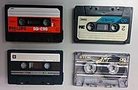Külső megjelenése
A magnókazetták kezdetben fekete, illetve fehér vagy világosszürke műanyagházzal készültek leginkább, ezeken kerültek kétoldalt elhelyezésre a címkék, melyek műsoros kazetta esetén a szalagon lévő A és B oldali programot sorolták fel, üres kazettánál a gyártó logója kapott rajta helyet, és az az üres felület, ahova a később felvett anyag címét lehetett utólag kézzel felírni. A két orsó közti kis ablakon a szalag áttekert állapotát lehetett látni, hogy mennyi ment át egyik orsóról a másikra.
A kazettákhoz mindig járt egy szétnyitható műanyag tok is, mely egy átlátszó elülső és egy matt fekete hátsó részből állt. Az elülső rész „hátrakunkorodva” a tok hátuljának egy részét is képezte, e mögé került a papír címlap, aminek a hátranyúló részén lehetett a kazetta programját a tokon elolvasni, míg a gerincén az előadó neve és a kiadvány címe kapott helyet, akárcsak a címoldalon, és ebbe a tokrészbe került maga a kazetta is. Üres kazettánál ez a papír is gyártólogókkal rendelkezett. A hátsó fekete tokrész belsején két rögzítőtüske kapott helyet, melyek összecsukva a kazetta orsóiba csúszva rögzítették a tokot és a kazettát. Ez a rész időnként szintén kaphatott más színt, jellemzően egy-egy előadó kazettáinak tokjaként. Az 1970-es évek végén kezdtek megjelenni a teljesen átlátszó kazetták és tokok, melyek főleg az 1980-as évekre váltak divattá, de más dizájnelemekkel is próbálták egyes gyártók egyedibbé tenni a kazettáikat. Időközben próbálkoztak más tárolómegoldásokkal is, de a hagyományos szerkezetű praktikus kazettatokokat semmivel nem tudták kiváltani.
Forrás:wikipédia
Trackball
A trackball, más néven hanyattegér egy számítógépes pozicionáló eszköz. A magyar elnevezés utal az eszköz működési elvére. Elképzelhetjük úgy, mintha az egeret a hátára fordítottuk volna, és nem az eszközt mozgatjuk, hanem a golyót forgatjuk. A golyó nélküli hanyattegér az érintőpárna.
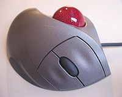Működési elve
Mechanikus kivitelben itt is a fő alkotóelem a golyó, mely a mechanikai elmozdulást adja át a két görgőnek. Ezek végén tárcsa található, melynek nyílásai egy optikai adó és vevő előtt haladnak el. Ez a kimenetén egy impulzussal jelzi, hogy egy rés haladt el előtte. Ha két-két ilyen kapunk van, akkor segítségükkel meg tudjuk határozni a mozgatás irányát és sebességét.
Optikai kivitelben a golyó felülete felel meg a normál optikai egér által nézett alátétnek. A mellékelt képre kattintva már jól látható, hogy a golyón olyan minta van, amely segíti az elfordulás jobb leolvasását.
Előnyök és hátrányok
Előnyök a hagyományos egérhez képest:
- igen pontos pozicionálás
- nagy távolságok gyors befutása, különösen a régi, nagy tehetetlenségű golyókkal és nem a nem túl fürge hüvelykujjra eső régi jobb elrendezésekkel
- lényegesen kisebb helyigény az asztalon
- a vezeték nem mozog, így a billentyűzet környéki dolgainkat nem birizgálja
- de megfordítva is: a billentyűzet környéki dolgaink teszegetése nem viszi odébb a pozicionálást, mert nem fordul el tőle a golyó, azaz ha önfeledten is dolgozunk az asztalunkon, a kurzor biztosan ott van, ahol korábban hagytuk, tehát nem kell keresni
Hátrányok is vannak, de ez főként dizájn és marketing okokra vezethető vissza:
- a képen látható elrendezésben a hüvelykujjal kell pozicionálni, ami sok embernek szokatlan, mert nem intuitív. Jobbak voltak a régebbi különféle elrendezések, amelyeknél intuitívan a mutató vagy annak foglaltsága esetén a középső ujjal pozicionáltunk.
- mechanikus kivitelnél a bőfüggelékek potyadéka a kemény golyó és az azt érzékelő görgő közé tudott úgy szorulni, hogy attól a görgők akadoztak, és így a pozicionálás is. Az optikai kivitelnél ez nem lép fel
- másodiknak érkezett a piacra, így az egér paradigmája elsőbbséget élvez, viszont sokak ízlése szerint nem jobb annyival a trackball, hogy átszokjanak az újabb paradigmára.[forrás?] Emiatt az ezredforduló utánra szinte kihalt a trackball
- a régi puritán és célszerű trackball elrendezést formatervezők vették kezelésbe, és így már annak sem tetszik a trackball, aki korábban szívesen használta a hagyományos elrendezésűt
Összesítve, a tradicionális elrendezésű trackball optikai kivitelben számtalan embernek irodai, precíziós tervezői és egyéb munkahelyen nagyon jó lenne, csak a dizájn és marketing mondhatni legyilkolta a trackballt. Játékra nem nagyon való, kivéve ha a játék pozicionálási igénye hasonlatos a komolyabb munkákhoz.
Forrás:wikipédia
Floppy / hajlékonylemez
A hajlékonylemez (magyar átírással flopilemez, angolul floppy disk vagy csak röviden floppy) adattároló eszköz, ami egy mágnesezhető felületű vékony, hajlékony lemezből és egy azt védő négyszögletes, keményebb műanyag tokból áll. Író-olvasó készüléke a hajlékonylemezes meghajtó (angolul Floppy Disk Drive, rövidítve FDD). Az IBM fejlesztette ki. Lemezek több méretben készültek, a legelterjedtebbek a 8; 5,25 és 3,5 hüvelykes (collos) méretűek voltak. Elterjedt adattároló volt az 1970-es évek közepétől az 1990-es évek végéig. Az optikai- és flashmeghajtók a 2000-es évek végére gyakorlatilag teljesen kiszorították, bár egyes helyeken, pl. régebbi repülőkön (részben biztonsági megfontolásokból) még mindig használatos.


Felépítése
A hajlékonylemez maga egy kör alakú, mindkét oldalán mágnesezhető réteggel ellátott vékony műanyaglap. Használatát az teszi lehetővé, hogy a forgás következtében létrejövő centrifugális erő hatására sík és viszonylag merev lesz. A külső fizikai behatásoktól egy tok védi meg, aminek a belső oldala a nagyobb méretű lemezeknél filc borítású. A lemezt a használathoz nem kell (és nem is lehet) kivenni ebből a tokból. Az író-olvasó fej(ek) és a forgató mechanika hozzáférését a tokon megfelelő rések kivágásával teszik lehetővé.
Fejlődése
8” hajlékonylemez
A korai, 8 hüvelykes meghajtók méreteik miatt még külső egységek voltak. A lemezek kapacitása típustól függően 160-500 KiB (kibibájt) volt.
A magyar gyártmányú EMG-777 típusú számítógépekben ilyen meghajtók voltak a monitor mellé beszerelve.


5 ¼” hajlékonylemez
A flopilemez egy négyzet alakú, 133x133 mm méretű borítóban van gyárilag elhelyezve. A működéshez a borító speciálisan van kialakítva, és lehetővé teszi, hogy a meghajtó használat közben nagy sebességgel forgassa a lemezt. A használatban két további kivágás játszik szerepet. Egyiken az író-olvasó fej fér hozzá a lemez felületéhez, a másik, 4-5 milliméteres kivágás pedig az írásvédelmet teszi lehetővé: a rést fényt át nem eresztő anyaggal leragasztva nem írható a lemez.
Az 5,25-ös meghajtó már a gépházba beépíthető készülékek közé tartozott. (Ennek mérete határozta meg a mai PC-k „nagyhelyét”.) Ezek már az otthoni felhasználók által is elérhető árú és méretű eszközök voltak. A lemez behelyezése után a képen jól látszó kallantyút elfordítva jött létre a mechanikus kapcsolat a forgatórendszer és a lemez között. Kivételnél a kallantyú elfordítása után egy rugó lökte ki annyira a lemezt, hogy kézzel ki lehessen venni.
A kisebb tudású készülékékben csak egy író-olvasó fej volt. Ezekben a kétoldalas lemezek használata körülményes volt, és a kétfejes meghajtókkal formázott lemezeket sem lehetett oldalanként használni. Ilyen volt például a Commodore 1541/I 5,25-ös lemezegység is, ami a tápegységgel és a vezérlőelektronikával volt egy házban.
Az 5 1/4" méretű lemezek járatos tárolási kapacitása a 8 bites Commodore gépeknél 170 KiB, PC-knél 360 KiB és 1,2 MiB, Commodore Amigánál 440, 880 és 1760 KiB.
3,5" hajlékonylemez
A kislemeznek, kisflopinak, mikrodiszknek is nevezett lemez kisebb méretű és nagyobb kapacitású előbbi társánál, ugyanakkor a meghajtón kívül az olvasófej hozzáférését biztosító nyílásokat egy fémlemez takarta, ezáltal kevésbé volt sérülésnek kitéve. A 3,5" méretű flopik leggyakoribb tárolási kapacitása 720 KiB, 1,44 MiB, később 2,88 MiB, a tok mérete 90x94x3,3 mm. A műanyag védőtok egyik sarkát "levágták", ami megakadályozta azt, hogy a lemez fordítva kerüljön a meghajtóba. A meghajtóba téve helyére „kattant”, a kivételhez egy kis gombot kell megnyomni (a képen jobboldalt, alul). A lemezműveleteket a készülék homloklapján elhelyezett LED jelezte. Elsősorban a számítógépházba beépített egységek voltak, de később megjelentek a külső csatlakozású meghajtók is. A kemény tokozás lehetővé tette, hogy az írásvédelmet egy apró lemezke eltolásával végezzék; ennél az 5 1/4"-es flopival ellentétben a fény áthaladása esetén nem lehetett írni a lemezre.
A 3,5"-es méretű hajlékonylemez-rendszert - 3 hüvelykes kivitelben - Jánosi Marcell dolgozta ki a Budapesti Rádiótechnikai Gyárban 1973-ban. A lemezt és a hozzá tartozó BRG MCD-1 típusjelű meghajtót szabadalmaztatták, de később nem általánosították, így a cég elveszítette az oltalom lehetőségét. 1982-ben az Amdek állt elő az AmDisk-3 mikroflopilemez-rendszerrel, amit az Apple II Disk II csatolókártyájához terveztek, de később más rendszereknél is alkalmaztak.
2010 áprilisában a Sony bejelentette, hogy 2011 márciusára végleg felhagynak a flopilemezek gyártásával.
A Verbatim ezt követően nyilatkozta, hogy a 3,5"-es lemezek gyártását tovább folytatja.
Zip Drive
A Zip drive igazi áttörést jelentett a hajlékonylemezes adattárolásban 1994-ben, a maga 100 MiB, majd 250 MiB és végül 750 MiB kapacitásával. Elterjedésének gátja magas árán kívül a hagyományos 3,5"-es flopival való kompatibilitás hiánya volt. Inkább kis cégek használták adataik napi archiválására.
LS-120; LS-240
A flopi utolsó „leszármazottja” az LS Drive meghajtó, ami már a számítógép IDE-portjához csatlakozik, így gyorsítva az adatátvitelt a meghajtó és az alaplap között. A normál 1,44 MiB-os lemezeket hatszoros sebességgel képes írni-olvasni. Az LS Drive Disk lemez 120 MiB, illetve 240 MiB kapacitású. Elterjedését nagyban gátolta magas ára.
A hajlékonylemezek jellemzői
A hajlékonylemezek tulajdonságainak megadásánál az alábbi rövidítések használatosak:
- SS (1S) - Egyoldalas (Single Side)
- DS (2S) - Kétoldalas (Double Side)
- SD (1D) - Szimpla sűrűségű (Single Density)
- DD (2D) - Dupla sűrűségű (Double Density)
- HD - Nagy (négyszeres) sűrűségű (High Density)
- ED - Megnövelt sűrűségű (Extra-high Density)
A flopi címkéjén a gyártó és egyéb adatok mellett mindig feltüntetésre kerül a használt oldalak száma és az írássűrűség, vesszővel vagy / jellel elválasztva. Például a kétoldalas, dupla sűrűségű lemez jelölése DS, DD.
Tárolási kapacitás
A lemezeken az adatokat sok formátumban rögzíthetjük, és a gyakorlatban számos megoldás elő is fordul, még egy géptípuson belül is, részben a „felülről kompatibilitás” jegyében. Az IBM által gyártott első személyi számítógép (Personal Computer, PC) 1981-ben jelent meg. Adattárolója 5 1/4"-es hajlékonylemez volt, egyoldalas, dupla sűrűségű, sávonként 8 szektorral, így 160 KiB tárolását tette lehetővé. A meghajtóból általában többet – akár négy darabot is – szereltek be egy gépbe. Egy sávon nemcsak 8, hanem 9, 10, esetleg még több szektor is kialakítható, bár az adattárolás biztonsága csökken. A PC megjelenése után röviddel a sávonkénti szektorok számát nyolcról kilencre növelték, és két író-olvasó fej használatával a lemez mindkét oldalára írtak, ezzel 360 KiB-ra növelve a flopi kapacitását. Néhány évig ez volt a „közös nevező”, az a formátum, amit minden számítógép megértett, így a programokat ilyen formátumú lemezeken forgalmazták, még akkor is, amikor az AT géptípusnál a nagysűrűségű lemezek és meghajtóik elterjedtek. Később ezt a módszert részben a programok méretének növekedése, részben a nagyobb kapacitású meghajtók elterjedése túlhaladta.
A lemez teljes hasznos kapacitását a sávok száma × egy sávon levő szektorok száma × egy szektorban lévő bájtok száma × oldalak száma adja. Eszerint az első általánosan elterjedt 5,25"-es lemezen 40×9×512×2 = 368 640 B = 360 KiB adatot tárolhatunk.
Az AT típusnál alkalmazott HD jelű hajlékony lemezek ugyanolyan méretűek voltak, de más mágnesezési tulajdonsággal bírtak, ezért a 360-as meghajtókkal sem írni, sem olvasni nem lehetett őket, fordítva viszont igen. A sávok száma 80-ra, egy sáv szektorainak száma is majdnem duplájára, 15-re növekedett, ezért négyszeres sűrűségűnek is nevezték (egyes DOS verziók formattáló programját HD lemeznél /4 kapcsolóval kellett paraméterezni). A flopi kapacitása így 80×15×512×2=1200 KiB lett; amint a továbbiakban látni fogjuk, ez nem azonos 1,2 MiB-tal, ami a címkén olvasható. Speciális formázással (az adatbiztonság rovására) a területet tovább lehet növelni, amit némelyik lemez címkéjén formázatlan kapacitásként tüntetnek fel.
Számrendszeri problémák
A számítógépek alapegységként a nyolc bitből álló bájtot (jele: B) és ennek többszöröseit használják mind a mai napig. Amikor egy adathalmaz (fájl, memória, háttértár stb.) nagysága jelentősen meghaladja az 1000 bájtot, a számítástechnikában is prefixumokat célszerű használni. Mivel itt mondhatni minden a bináris számrendszeren alapul, a nagyságrendek is eltérnek a közéletben használatos decimális rendszertől, ami félreértésre ad lehetőséget. A bináris rendszerben kilobájt alatt 210 bájtot értünk, azaz a bináris kilo prefixum szorzóértéke 1024. A bináris mega prefixum 220, azaz 1 048 576 (a további prefixumok a hajlékonylemezeket nem érintik).
A háttértárolók kapacitásának megadásánál a két rendszer sajátosan keveredik, bár a flopilemezeknél gyakorlatilag nagy problémát nem okoz, ellentétben a napjainkban terabájt nagyságrendet is meghaladó merevlemezekkel. Az 512 bájtos szektornagyság miatt a bináris, a sávok és szektorok számát tekintve viszont a decimális rendszer használata indokolt. A 360 KB jelölés elfogadható volt, mert az 1024-et jelentő nagy K különbözött a decimális 1000 kis k jelétől. Azonban a mega esetében már nem volt ilyen megkülönböztetésre lehetőség egészen addig, amíg 1998-ban több mértékügyi szervezet ajánlást nem tett közzé. Ennek értelmében a decimális mega bináris párja a mebi, jele Mi. Az ajánlás szerint a DS-9,DD lemez tárolókapacitása 360 KiB, viszont az 1,44 MB jelzéssel forgalmazott DS-18,HD lemez szabatos prefixum használattal 1440 KiB, vagy 1,47456 MB, vagy 1,40625 MiB. (Mivel a számítástechnikával mélyebb szinten foglalkozók bináris rendszerben gondolkoznak, ezért számukra a háttértároló valós kapacitása mindig kisebb, mint ami a lemezen olvasható.)
Érdekesség: Az 1990-es évek közepéig még többé-kevésbé gyakori volt az adatok hajlékonylemezen történő tömörített archiválása. Abban az időben a legbonyolultabb, és egyben legtöbbet tudó tömörítő program az ARJ volt (csak érdekességképpen jegyezzük meg, hogy akár ezer lemezre történő mentést is támogatott). A szeletelt archívok készítése, ellenőrzése sokkal egyszerűbb volt, ha először merevlemezre történt a munka, majd onnan másolták hajlékonylemezre a szeleteket. Ehhez a program több kapcsolót biztosított. A /V360, /V720, /V1200 és /V1440 kapcsolók bármelyikével a számot KiB-ként értelmezve pontosan akkora szelet készült, amekkora a szabványosan formázott flopit 100%-osan megtöltötte. Amennyiben az előbbi kapcsolókat egy K betűvel kiegészítették, akkor a szeletek mérete a decimális értelmezésnek felelt meg (természetesen tetszőleges ezres méretet meg lehetett adni).
Adattárolás hajlékonylemezen
A lemez előkészítése használatra
Ahhoz, hogy egy flopilemezt használatba vehessünk, a teljesen üres mágnesezhető felületet elő kell készíteni, szakszóval meg kell formázni. Ez az operációs rendszer megfelelő programjával történik, és rendszerenként különböző. A lemezen az információ egy vagy mindkét oldalon, koncentrikus sávokon (angolul: track) helyezkedik el: ezt a lemezegység fizikailag meghatározza. Minden sáv azonos számú ívdarabra, szektorra van felosztva: ez a legkisebb, egyszerre olvasható-írható lemezterület. Hogy hány szektor helyezkedik el egy sávon és egy szektorban hány bájt legyen, sőt bizonyos határon belül hány sáv legyen, az operációs rendszer illetve más formázó programok döntik el, ezért is nevezik a hajlékony lemezeket szoft-szektorosnak.
Az adattárolásnál a meghajtónak ismerni kell a sávok kezdőpontját, amit a lemezen és a tokon levő apró ún. indexlyuk tesz lehetővé, melynek helyzetét egy optikai érzékelő olvassa le. Innen kezdődően kerül felírásra formázáskor a szektorok mintázata. A PC-ken általánosan használt DOS és az őt követő Windows rendszerek szektorformátumának lényege a következő:
- A szektorfej különböző adminisztrációs célú adatokat tartalmaz, valamint egy hibaellenőrző kódot (CRC), amit egy üres rész (GAP) követ.
- Az adatrész értelemszerűen a tárolni kívánt adatot tartalmazza. A fejhez hasonlóan CRC és GAP követi. Ezen a területen a felhasználó rendelkezésére álló hasznos terület a bináris rendszerből eredően 128 bájt vagy ennek többszöröse lehet, mégis mind a mai napig egyedül az 512 bájtos méret használatos.
- • A sáv szektorai után egy elég jelentős kihasználatlan terület marad, ahol speciális formázással további szektor(oka)t lehet kialakítani, bár ez már az adatbiztonság rovására mehet.
A hibaellenőrző kód az adattárolásban széles körben alkalmazott módszer: egy adott terület bináris adataiból meghatározott algoritmus alapján képzett szám. Ha az olvasás során ugyanazon algoritmussal képzett szám a felírt CRC-vel nem egyezik, akkor biztos hiba történt, amit a rendszer jelez.
A fej és adatrész után azért van szükség hézagra, hogy a beolvasott adatokat fel lehessen dolgozni és a megfelelő műveletet elvégezni, de a lemez forgási sebességének minimális mértékű változása miatt is elengedhetetlen.
Adatok írása és olvasása
A fentiek szerint megformázott lemez fizikai írása és olvasása a meghajtó és a flopi illesztő egység használatával történik, egy felsőbb szintű lemezkezelés során. A DOS ill. DOS alapú Windows rendszerek ehhez a feladathoz a hajlékonylemez négy, egymástól eltérő méretű és szerkezetű részét használják.
Magyar vonatkozások
Mindhárom típust gyártotta a Magyar Optikai Művek, a KGST igényeket többé-kevésbé kielégítve. A készülékek saját tervezésűek voltak. A prototípusig jutott a KFKI 5,25-ös készüléke, ami sorozatgyártásba, illetve értékesítésre nem került. A MOM készülékei magas műszaki színvonalat képviseltek, egyedi konstrukciós és technológiai megoldásokat is tartalmaztak. A sorozatgyártásban azonban nem tudta megközelíteni a világszínvonalat: a havi öt-hatszázas sorozatnál nagyobb darabszámú gyártás feltételeit nem sikerült megteremteni.
Jánosi Marcell már 1974. november 30-án szabadalmaztatta Magyarországon a floppy-t.
Forrás:wikipédia
Mátrix nyomtató
Habár szerepel ezen a listán, a mátrix nyomtató irodai közegben továbbra is gyakran megtalálható, mivel indigós nyomtatással egyszerre akár több nyomat is létrehozható.
Mátrix nyomtatő működése
A Mátrix nyomtató egy impact nyomtató típus. Működési elve nagyon hasonlít az írógéphez, de kész karakterek helyett általában 9 vagy 12 tűből álló tűsorok találhatóak. Ezek a tűk elektromágnesesség segítségével nekilökődnek egy tintaszallagnak a papír előtt, ami így a tű nyomában foltot hagy. minél több tű van a nyomtatófejben, annál jobb képminőséget képes nyomtatni a nyomtató.
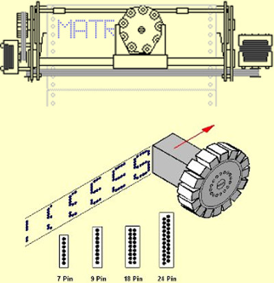
Miután a nyomtatófej végig fut egy soron, a traktor fogaskereke továbbhúzza a leporello papírt az oldalán lévő lyukak segítségében.
Története
Az első mátrix nyomtatót a japán Seikosha cég tette piacra az 1964-es tokioi olimpiára, az időmérés adatainak kinyomtatására. Később ez az Epson leányvállalat megalapulásához vezetett.
Forrás: Wikipedia CDmarket tonerpartners Informatikai ismeretek 3.4.3